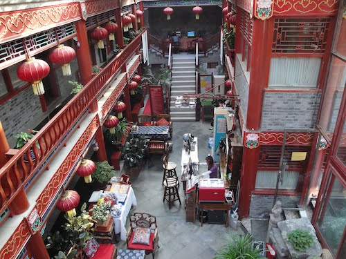
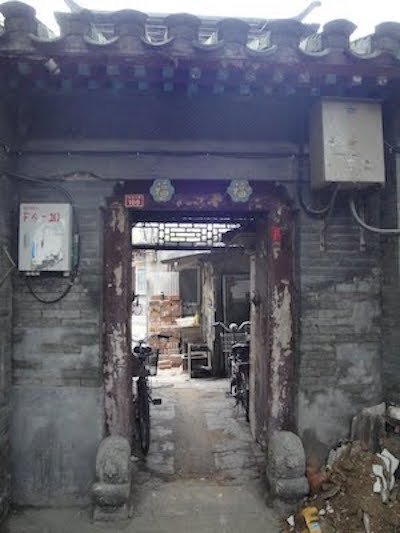
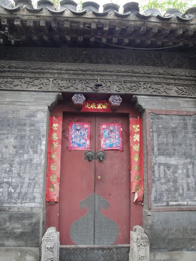
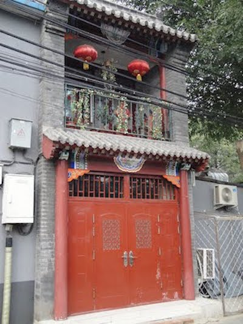

What a life changing experience! I like to find unique experiences wherever I travel. In Beijing, my husband and I decided to stay in the section of the city called the Hutong. This is old Beijing. It is made up of courtyard houses, houses several generations of families under one roof, often without electricity or plumbing. Luckily, we found a courtyard house that had been converted into a lovely inn with some modern amenities.

This is the courtyard inn
An example of an old hutong
 These have been well maintained